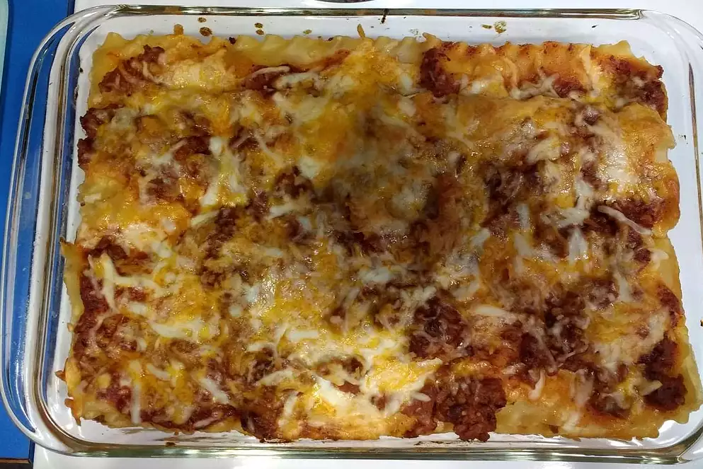

Lasanga recipe

A faster and cheaper way to make a lasanga
Ingredients
- 1 (16 ounce) package lasagna noodles
- pound lean ground beef
- and pepper to taste
- 1 (16 ounce) jar spaghetti sauce
- clove garlic, minced
- 1/2 pound shredded mozzarella cheese
- 1/2 pound shredded Cheddar cheese
- 1 pint ricotta cheese
-
Bring a large pot of lightly salted water to a boil. Add pasta and cook for 8 to 10 minutes or until al dente; drain.
-
Preheat oven to 350 degrees F (175 degrees C). In a large skillet over medium-high heat, brown beef and season with salt and pepper; drain. Stir in spaghetti sauce and garlic and simmer 5 minutes.
-
In a medium bowl, combine mozzarella, Cheddar and ricotta; stir well. In 9x13 inch pan, alternate layers of noodles, meat mixture and cheese mixture until pan is filled.
-
Bake in preheated oven for 30 minutes, or until cheese is melted and bubbly.